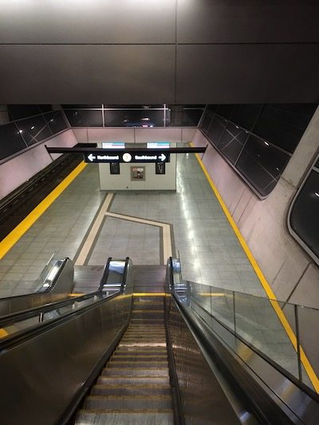
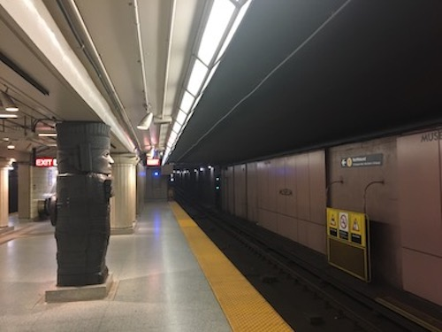

Despite the fact that the TTC has moved on from Sheppard Signage to something that is less of a rip-off of London’s and New York’s signs, there are still some issues.
These signs are very handy, but they have two issues:
Why are they only on the far-side platform wall?

As can be seen in this photo,1 these signs are only useful if you are on the platform and there are no trains in the station. Coming down the stairs and want to know if you’ll have to turn left or right to go downtown? Guess. There’s a train waiting and you want to know if you should hop on? Well, it’s amazingly covering up the directional signs so you’ll have to guess again.2
Solution: Wherever there is a direction (Northbound, Southbound, Eastbound, Westbound), include where that direction leads to (to Finch, to Finch via Union, to Kipling, …). There should never be a “...bound” on its own.
Why are they not visible from inside the train (at some stations)?
While the station name its obviously important to the rider for figuring out where the train is, having a next station sign would be more useful to the riders, rather than those on the platform. A rider might like to know that their station is coming up, whereas someone waiting on the platform rarely is only riding one stop and so can only use this information to orient themselves on the map (which is actually very useful).3
Solution: Move the signs down to make them visible in the train, like on Line 3 (SRT). With Automatic Train Operation (ATO), this should be even easier as the windows will always be at the same spot.
As has been outlined elsewhere, by someone who is actually an expert, the Museum station renovation was incredibly poor. There are many issues, but I just want to look at how things are aligned. Just a quick summary/compilation:
Firstly, the large letters on the wall are monospaced. Each letter’s centreline is an equal distance from its neighbours’ centreline, which isn’t really right for a variable-width font like this one. However, at such large sizes, I don’t think it looks bad, but then again, I’m not an expert, and it certainly is possible it could look better if designed properly. However, I still like the large letters and the colour scheme.
Secondly, the smaller station identification Museum isn’t visible from inside the train. Whoever placed this made the juvenile but easy–to–make error of centring vertically. The previous designers of the TTC stations were very smart in that they put the station identification slightly high on the wall. This solved two problems: first, it made sure the station name was visible through train windows. Second, it solved the issue that vertically centred items always look too low. This is why the Apple logo on the back of an iPhone is slightly high: it just looks right.

See how the centred text looks a little too low? It is actually centred, but this not only looks wrong, it’s hard to read from inside the train.
This photo also shows how the font the TTC chose blurs excellently, making it hard to read at a distance, like if it’s on a – I don’t know – sign. ↩
This is mitigated somewhat by the dot-matrix displays on the side of the trains, but those scroll and are hard to read. ↩
The odd thing is, at stations where this is an issue (like Bloor or most of Line 2), the signs are placed in the curve of the ceiling so people on the platform & passengers in the train can’t see it at the same time! ↩